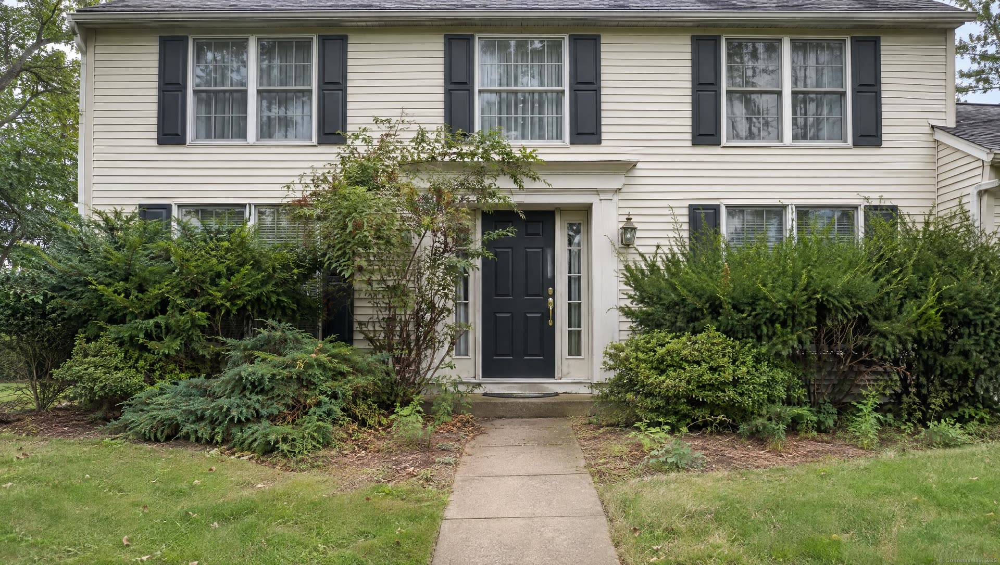
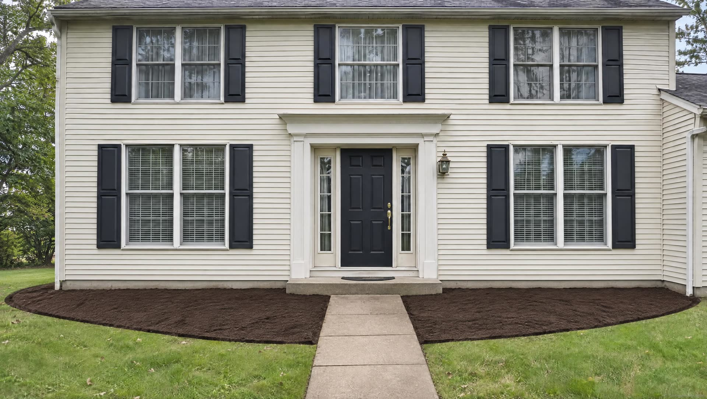
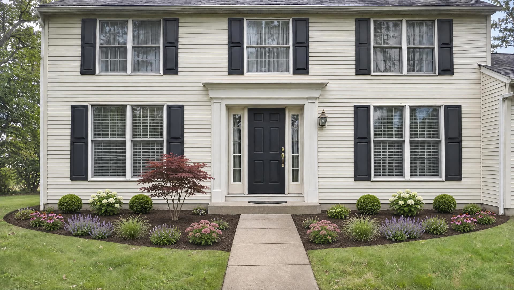
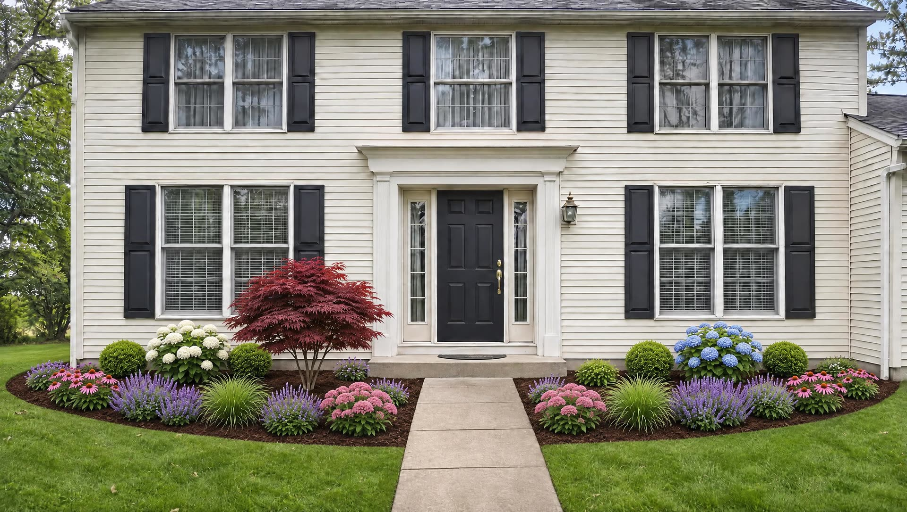

Builder grade, twenty years on.
Shrubs planted too close to the house have swallowed the windows and the front door.
Clear it out. Redraw the beds.
Old, overgrown material comes out in a fraction of the time with turf-friendly equipment. New bed lines are cut in.
Right plant, right place.
Chosen for this exposure and this soil, and for the size each plant will be in a few years. Most plant failures come down to placement.
Mulched, edged, and under warranty.
Most new plant material carries a no-charge warranty, and we can keep it looking like this with a maintenance package.
Design and installation
Landscape
Most homes are built with a "builder grade" landscape that has a lifespan. If the house is twenty years old and still has the original planting, it is probably time. We design landscapes that work with the hardscape and lighting, and that still fit in ten years.
Request an estimateWhat is included
- Landscape design
- Large tree installations
- Tree and shrub care programs
- Transplanting
- Edging and mulching
- Weeding
- Spring and fall cleanups
See the difference
Drag the green line.
The same spot, from the same place. Pull the line left and right to compare.
Through the seasons
Tree and shrub care, through the year
Different plants are vulnerable to different insects and diseases at different times, so each program is built for the landscape it protects. Every visit is made by a licensed professional who checks the property and tells you what they found. Natural options are available.
Good to know
- No-charge plant warranty
- On most new plant material.
- Designed for the long run
- Plant material that stays in scale, so the design lasts for decades.
- Soil and exposure first
- We evaluate the property before choosing a single plant.
- Account on autopilot
- A custom maintenance package keeps the new landscape the way it was designed.
Next service
Turf →